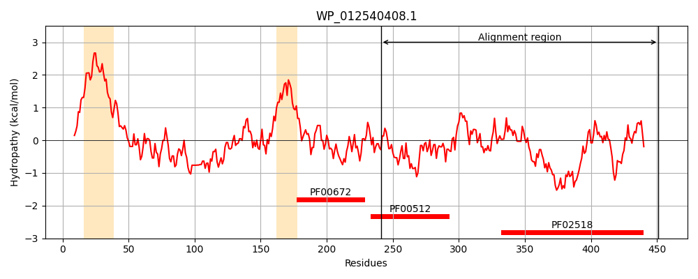
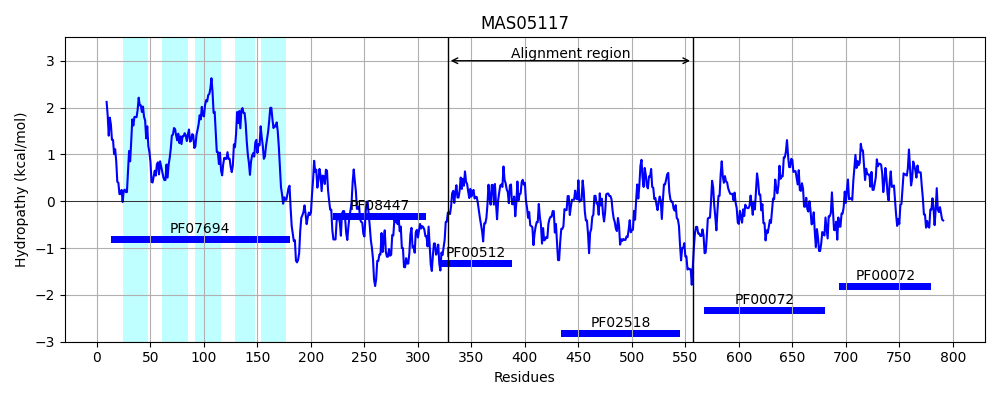
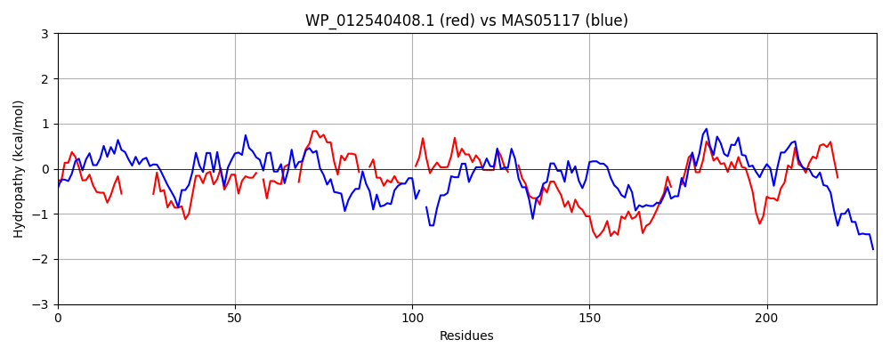

Hit Accession: MAS05117
Hit TCID: 9.B.34.1.7
Hit Description: gnl|BL_ORD_ID|6460 gnl|TC-DB|MAS05117.1|9.B.34.1.7 hybrid sensor histidine kinase/response regulator [Ahrensia sp.]
Mach Len: 231
e:0.000000
Query TMS Count : 2
Hit TMS Count: 5
TMS-Overlap Score: 0.700000
Predicted Substrates:None
BLAST Alignment:
Score: 185 , Bit scores: 75 bits, E-value: 1.2e-14, Alignment length: 231, Percentage identity: 28
Query: 241 VSHDLRTPLTRIRLATEMM--------GEQDGYLAESINKDIEECNAIIEQFIDYLR-TGQEMPME--LADLNAVLGEVIAAESGY--EREIATALQA---GEIPVRMHPLSIKRALANMVVNAARYG--NGWIKVSSGSEASRAWFQVEDDGPGIKPEQREHLFQPFVRGDSA--RSTSGTGLGLAIVQRIIDNHNGRLEIGSSERGGLLIRAWLPVHRMLAPMKPAKES 451
VSH+LRTPLT IR A +M G + L + +K+ E A++ +D R T +P L DL ++ + A Y E+ + ++ GE + P + L N++ NA ++ +G ++++ G V D+G GI E +F F R D+A +S +GTGLGL+I + I++ NGR+ +S G + A H+ P + +++
Sbjct: 328 VSHELRTPLTSIRGALGLMSSGASGEVGPKMSNLIKIAHKNSERLVALVNDILDIERITTGRLPFTFGLHDLGEMVHAGVDASRNYMPEKNVTLVVEDNFHGE-KILTDPERFHQVLMNLLSNAIKFSPDSGQVRIAIGRRQDEIVVSVSDNGVGIPESFHERIFGKFERADNALSKSVNGTGLGLSIAKAIVERLNGRIWFETSGAGSVFHVALPAKHKAENPAESDEDA 557 | Protein Hydropathy Plots: |
|---|
|  |  |
Pairwise Alignment-Hydropathy Plot:
|
|---|
|  |